K-means clustering is a popular unsupervised machine learning algorithm used to group similar data points into clusters. In the context of Twitter data analysis on the topic of supplement intake, K-means clustering can be used to identify patterns and similarities in the tweets based on their content, sentiments, and other relevant features.
In partition clustering, the data is divided into K clusters, where K is a predefined number. The algorithm randomly selects K initial centroids and assigns each data point to the nearest centroid. The algorithm then updates the centroid positions and re-assigns the data points iteratively until the centroids no longer move significantly or a maximum number of iterations is reached. This method is computationally efficient and works well for large datasets, but it may be sensitive to the initial centroids and can result in sub-optimal clusters.
In hierarchical clustering, the data is divided into a hierarchy of clusters that can be visualized as a tree-like structure called a dendrogram. The algorithm starts by treating each data point as a separate cluster and then iteratively merges the closest clusters based on a chosen distance metric. There are two types of hierarchical clustering: agglomerative (bottom-up) and divisive (top-down). Agglomerative clustering starts with each data point as a separate cluster and iteratively merges the closest pairs of clusters until all data points belong to a single cluster. Divisive clustering starts with all data points in a single cluster and recursively splits the clusters into smaller clusters. Hierarchical clustering can be computationally expensive for large datasets, but it is more flexible than partition clustering and can provide more insight into the structure of the data.
Distance metrics are a key component of clustering algorithms, as they define the notion of similarity or dissimilarity between data points. The most common distance metrics used in clustering are:
- Euclidean distance: This is a common distance metric used in clustering and measures the straight-line distance between two points in n-dimensional space. For GHG pollutant data, this metric can be used to measure the distance between two countries or regions based on their emissions of different GHG pollutants.
- Cosine distance: This metric can be used to calculate the similarity between two tweets based on their content. We can represent each tweet as a vector of word frequencies, and then compute the cosine similarity between the vectors. This can help us cluster tweets that are similar in terms of their content, while being insensitive to the length of the tweets.
- Hamming distance: This metric can be used to calculate the distance between two tweets based on their sentiment labels. We can represent each tweet as a binary vector indicating whether it has a positive, negative, or neutral sentiment, and then compute the Hamming distance between the vectors. This can help us cluster tweets that have similar sentiment labels.
Choosing the right distance metric is important for the performance of clustering algorithms, as it can impact the quality and interpretability of the resulting clusters.
Data Gathering:
- Used Count vectorized data: cluster_datav2.csv
Link to the dataset: Dataset
Link to HClust code: Hierarchical Clustering
Link to the Python code: Complete Code
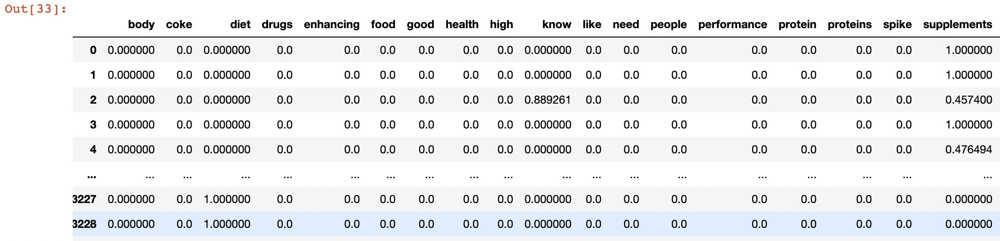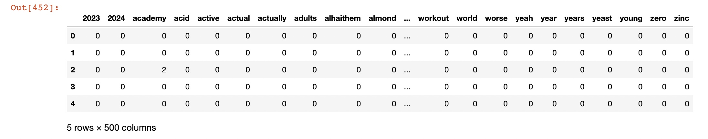
- 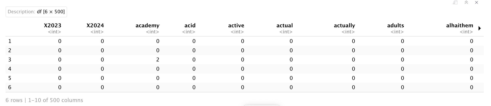
In hierarchical clustering, we can use agglomerative clustering to form clusters bottom-up. We start with each tweet as a separate cluster and compute the pairwise distances between all the clusters using the Euclidean distance. We then merge the closest pair of clusters and repeat until we have a single cluster that contains all the tweets. We can use the ward linkage criterion, which minimizes the variance of the distances between the clusters being merged, to determine the distance between clusters. This results in a dendrogram that can be used to visualize the hierarchical structure of the clusters.
In k-means clustering, we need to specify the number of clusters K that we want to form. We can use techniques like elbow method or silhouette score to determine the optimal value of K. Once we have the value of K, we can initialize K centroids randomly and assign each data point to the closest centroid. We then update the centroids by taking the mean of all the data points in each cluster, and reassign the data points to the new centroids. We repeat these steps until convergence. In the case of count vectorizer data, each data point represents a tweet, and each feature represents the frequency of a particular word. We can use the Euclidean distance as the distance metric to compute the distance between tweets.
Hierarchical Clustering
The resulting dendrogram plot is produced by the plot() function, which takes the hierarchical clustering object (hc) as input. The x-axis of the plot shows the distance between the clusters, and the y-axis shows the objects being clustered. The xlab argument sets the label for the x-axis, and the hang argument sets the amount of space to reserve on the left-hand side of the plot for the object labels. A value of -1 for hang means that the labels are left-justified. The resulting plot shows the hierarchy of clusters, with similar objects grouped together at the bottom of the plot and dissimilar objects grouped further up the plot. The height of the branches in the dendrogram represents the distance between clusters. Clusters that are closer together have a lower branch height, while clusters that are further apart have a higher branch height.
Dendrogram using Cosine similarity and H Clust with 4 clusters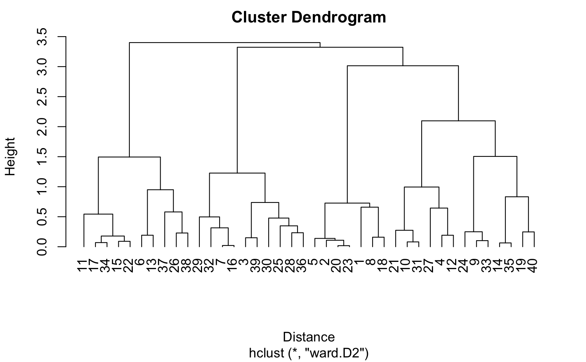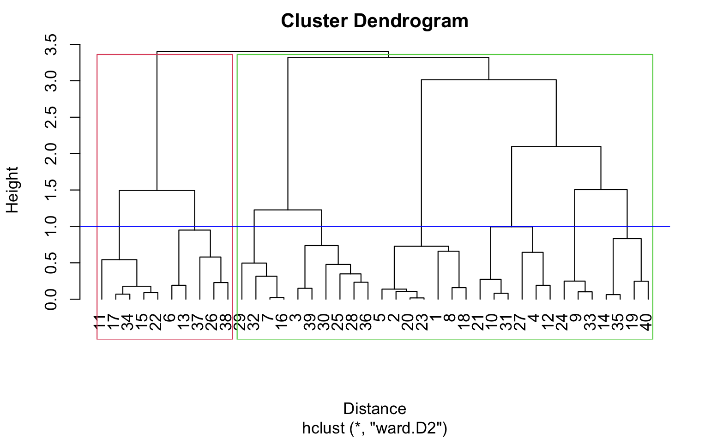
Choosing K
This line displays the elbow plot generated by the KElbowVisualizer. The elbow plot shows the within-cluster sum of squares as a function of the number of clusters (k). The optimal number of clusters is usually where the curve starts to level off, which looks like an elbow. By examining the elbow plot, one can determine the optimal number of clusters for the dataset X.
The optimal number of clusters is usually the one with the highest Silhouette Score. Therefore, in this case, we would look for the highest bar on the graph to determine the optimal number of clusters. Therefore, the following graph shows silhouette score is high for k=2,4,7Elbow method and silhouette methode to analyse the number of clusters to show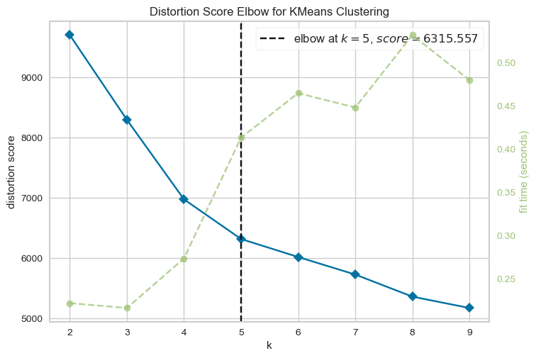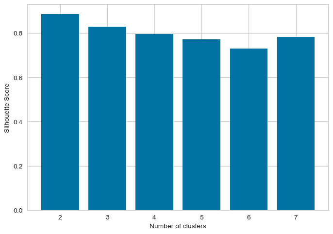
Following Graphs shows the silhouette scores for k=2,3,4,5
The Silhouette Plot shows how well-separated the clusters are, based on the Silhouette Coefficient. A high Silhouette Coefficient indicates that the data point is well-matched to its own cluster and poorly-matched to neighboring clusters. The vertical line in the plot indicates the average Silhouette Coefficient for all data points in the cluster. By looking at the Silhouette Plots for different n_clusters values, we can determine the optimal number of clusters for the data.
The code performs K-means clustering with different values of n_clusters and evaluates the quality of each clustering using the Silhouette Score. It also creates a Silhouette Plot for each clustering to help visualize the quality of the clustering.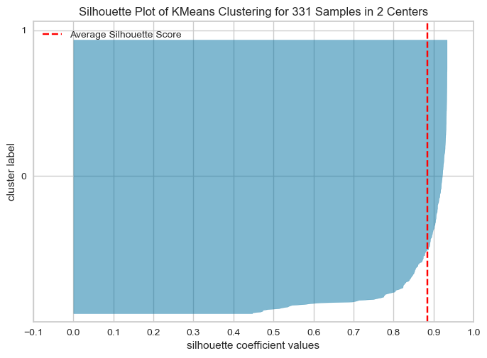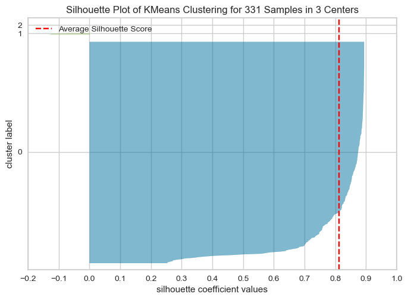
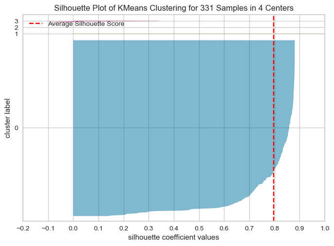
Conclusion
From the elbow method and silhouette score, we see in elbow method the optimal number of clusters are 2, whereas in silhouette method, silhouette score for k=2 is 88 % , k=4 is 79.99 and k=3 is 81
As the optimal number of clusters may vary depending on the specific dataset and the number of iterations we perform, it's important to use a combination of techniques, including the elbow method, silhouette score, and domain knowledge, to determine the optimal number of clusters for a given dataset. Additionally, it's important to carefully interpret the results of cluster analysis and use the insights gained to inform strategies . Hence based on the silhouette score, we can say the optimal number of cluster is 2.
For k=2, shows how the clusters are formed and centroids are placed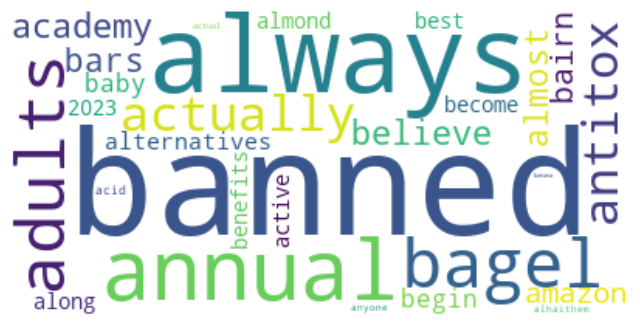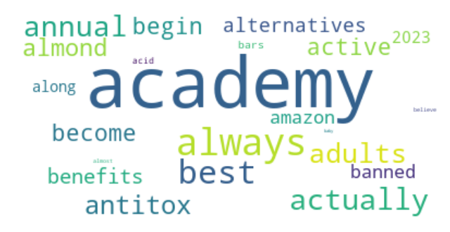
For k=3, shows how the clusters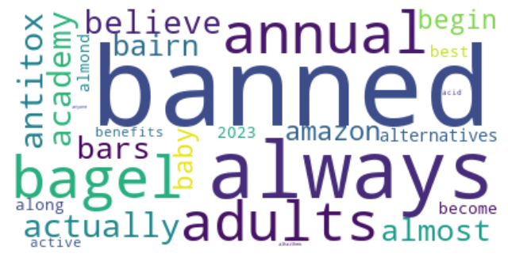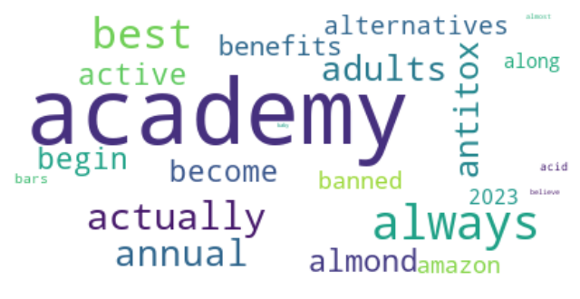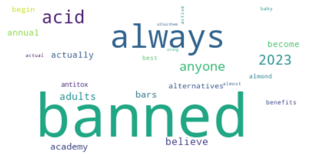
For k=4, shows how the clusters are formed and centroids are placed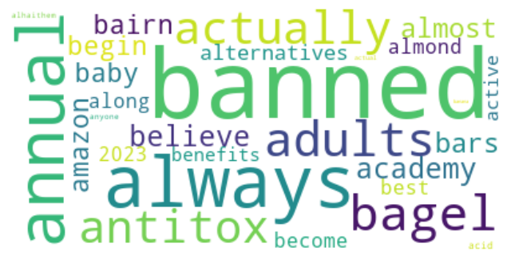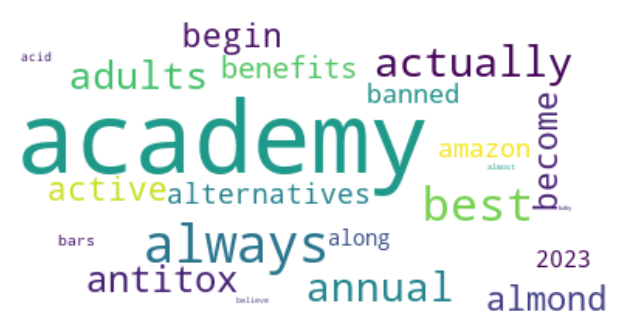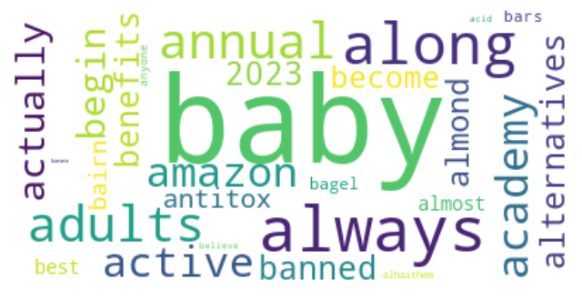
- 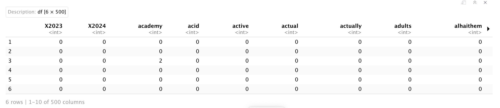